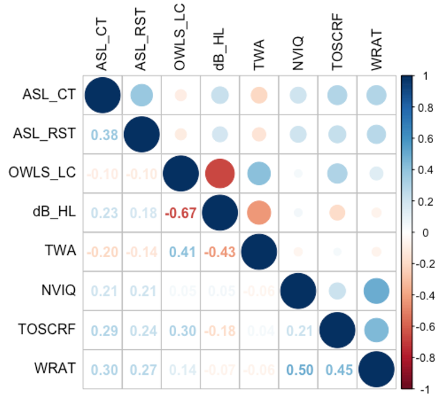

Summarizing data
Conducting common statistical tests
Reporting results
Tips for writing good code
The functions summarise() (or summarize across the pond) are great for summarizing data!
If you want to summarize across groups, you use group_by first to group the data.
Let’s use a dataset called asl_signs, which has information about ASL signs and their frequency, iconicity, movement, handshape, etc.
| entry_id | sign_frequency | iconicity | iconicity_type | lexical_class | handshape | selected_fingers | flexion | flexion_change | spread | spread_change | thumb_position | thumb_contact | sign_type | movement | repeated_movement | major_location | minor_location | second_minor_location | contact | non_dominant_handshape |
|---|---|---|---|---|---|---|---|---|---|---|---|---|---|---|---|---|---|---|---|---|
| tree | 5.143 | 4.232 | Perceptual | Noun | 5 | imrp | FullyOpen | 0 | 1 | 0 | Open | 0 | OneHanded | None | 1 | Neutral | Neutral | NA | 0 | NA |
| night | 6.032 | 1.919 | Arbitrary | Noun | flat_b | imrp | Flat | 0 | 0 | 0 | Open | 0 | AsymmetricalSameHandshape | Straight | 1 | Hand | PalmBack | NA | 1 | flat_b |
| hamburger | 4.429 | 3.714 | Arbitrary | Noun | c | imrp | Curved | 0 | 0 | 0 | Open | 0 | SymmetricalOrAlternating | Straight | 0 | Neutral | Neutral | Neutral | 1 | c |
| nephew | 2.621 | 1.108 | Arbitrary | Noun | flat_n | im | Flat | 0 | 0 | 0 | Closed | 1 | OneHanded | None | 1 | Head | HeadAway | NA | 0 | NA |
| castle | 1.579 | 3.540 | Arbitrary | Noun | curved_v | im | Curved | 1 | 1 | 0 | Closed | 0 | SymmetricalOrAlternating | Straight | 1 | Neutral | Neutral | Neutral | 1 | curved_v |
| humble | 3.200 | 1.846 | Arbitrary | Adjective | 1 | i | FullyOpen | 0 | NA | NA | Closed | 0 | OneHanded | None | 0 | Head | Mouth | NA | 1 | NA |
| cup | 5.742 | 2.897 | Arbitrary | Noun | c | imrp | Curved | 0 | 0 | 0 | Open | 0 | AsymmetricalDifferentHandshape | Straight | 1 | Hand | Palm | NA | 1 | B |
| english | 4.645 | 1.026 | Arbitrary | Noun | c | imrp | Curved | 0 | 0 | 0 | Open | 0 | AsymmetricalSameHandshape | Straight | 1 | Hand | PalmBack | NA | 1 | c |
| dentist | 2.677 | 3.923 | Arbitrary | Noun | s | imrp | FullyClosed | 0 | NA | 0 | Closed | 1 | OneHanded | Straight | 1 | Head | Mouth | NA | 1 | NA |
| sandwich | 3.677 | 2.538 | Arbitrary | Noun | flat_b | imrp | Flat | 0 | 0 | 0 | Open | 0 | AsymmetricalDifferentHandshape | Straight | 1 | Head | HeadAway | HeadAway | 0 | B |
| monkey | 2.619 | 6.014 | Pantomimic | Noun | curved_5 | imrp | Curved | 1 | 1 | 0 | Open | 0 | SymmetricalOrAlternating | None | 1 | Body | Waist | NA | 1 | curved_5 |
| chair | 5.714 | 1.979 | Arbitrary | Noun | h | im | FullyOpen | 0 | 0 | 0 | Closed | 0 | DominanceViolation | Straight | 1 | Hand | FingerBack | NA | 1 | DominanceConditionViolation |
| candy_1 | 4.419 | 1.897 | Arbitrary | Noun | 1 | i | FullyOpen | 0 | NA | NA | Closed | 0 | OneHanded | None | 1 | Head | CheekNose | NA | 1 | NA |
| wander | 3.548 | 3.487 | Arbitrary | Verb | 1 | i | FullyOpen | 0 | NA | NA | Closed | 0 | OneHanded | Z-shaped | 0 | Neutral | Neutral | Neutral | 0 | NA |
| scientist | 3.516 | 1.410 | Arbitrary | Noun | a | t | NA | NA | NA | NA | Open | NA | SymmetricalOrAlternating | Circular | 1 | Neutral | Neutral | Neutral | 0 | a |
| read | 6.387 | 4.571 | Perceptual | Verb | v | im | FullyOpen | 0 | 1 | 0 | Closed | 0 | AsymmetricalDifferentHandshape | Straight | 1 | Hand | HandAway | HandAway | 0 | B |
| cat | 5.097 | 4.618 | Both | Noun | f | i | Curved | 0 | NA | NA | Open | 1 | OneHanded | Straight | 1 | Head | CheekNose | HeadAway | 1 | NA |
| room | 5.742 | 4.154 | Perceptual | Noun | open_b | imrp | FullyOpen | 0 | 0 | 0 | Open | 0 | SymmetricalOrAlternating | Straight | 0 | Neutral | Neutral | NA | 0 | open_b |
| island | 3.161 | 1.718 | Arbitrary | Noun | i | p | FullyOpen | 0 | NA | NA | Closed | 0 | AsymmetricalDifferentHandshape | Circular | 1 | Hand | PalmBack | PalmBack | 1 | B |
| paper | 6.484 | 3.051 | Arbitrary | Noun | 5 | imrp | FullyOpen | 0 | 1 | 0 | Open | 0 | AsymmetricalSameHandshape | Curved | 1 | Hand | Palm | HandAway | 1 | 5 |
Let’s summarize the iconicity variable, which is a score on a Likert scale of 1-7 (already summarized across respondents).
| n | mean_iconicity | stdev_iconicity | min_iconicity | max_iconicity |
|---|---|---|---|---|
| 1768 | NA | NA | NA | NA |
Everything except n is NA! This is because we forgot to take care of NA values in our data.
Let’s summarize the iconicity variable, which is a score on a Likert scale of 1-7 (already summarized across respondents).
| n | mean_iconicity | stdev_iconicity | min_iconicity | max_iconicity |
|---|---|---|---|---|
| 1768 | 2.948419 | 1.459429 | 1 | 7 |
This data isn’t very interesting unless we have a grouping factor of interest.
We use group_by() to group a dataframe using a variable.
| lexical_class | n | mean_iconicity | stdev_iconicity | min_iconicity | max_iconicity |
|---|---|---|---|---|---|
| Adjective | 274 | 2.554081 | 1.132531 | 1 | 6.85 |
| Noun | 912 | 2.748597 | 1.446377 | 1 | 7.00 |
| Verb | 582 | 3.449101 | 1.486408 | 1 | 7.00 |
We can group by different variables.
| iconicity_type | n | mean_iconicity | stdev_iconicity | min_iconicity | max_iconicity |
|---|---|---|---|---|---|
| Arbitrary | 1415 | 2.344436 | 0.8130150 | 1.000 | 4.100 |
| Both | 96 | 5.097688 | 0.7912732 | 4.000 | 7.000 |
| Pantomimic | 145 | 5.698214 | 0.8233688 | 4.000 | 7.000 |
| Perceptual | 112 | 5.142523 | 0.7877890 | 3.875 | 6.947 |
We can even group by two variables at once.
| lexical_class | iconicity_type | n | mean_iconicity | stdev_iconicity | min_iconicity | max_iconicity |
|---|---|---|---|---|---|---|
| Adjective | Arbitrary | 245 | 2.261521 | 0.7480134 | 1.000 | 3.938 |
| Adjective | Both | 13 | 4.848923 | 0.7336797 | 4.061 | 6.360 |
| Adjective | Pantomimic | 8 | 5.157000 | 0.8359547 | 4.000 | 6.850 |
| Adjective | Perceptual | 8 | 5.145125 | 0.7840664 | 4.083 | 6.320 |
| Noun | Arbitrary | 752 | 2.198046 | 0.8086149 | 1.000 | 3.969 |
| Noun | Both | 51 | 4.992882 | 0.7351855 | 4.000 | 7.000 |
| Noun | Pantomimic | 62 | 5.793323 | 0.8184724 | 4.211 | 7.000 |
| Noun | Perceptual | 47 | 5.047106 | 0.8511310 | 4.000 | 6.947 |
| Verb | Arbitrary | 418 | 2.657444 | 0.7718490 | 1.000 | 4.100 |
| Verb | Both | 32 | 5.365781 | 0.8487522 | 4.000 | 6.889 |
| Verb | Pantomimic | 75 | 5.677320 | 0.8131560 | 4.033 | 7.000 |
| Verb | Perceptual | 57 | 5.222232 | 0.7367829 | 3.875 | 6.826 |
To save the summarized data as an object, we assign it to a new object with the name asl_signs_summ.
| lexical_class | iconicity_type | n | mean_iconicity | stdev_iconicity | min_iconicity | max_iconicity |
|---|---|---|---|---|---|---|
| Adjective | Arbitrary | 245 | 2.261521 | 0.7480134 | 1.000 | 3.938 |
| Adjective | Both | 13 | 4.848923 | 0.7336797 | 4.061 | 6.360 |
| Adjective | Pantomimic | 8 | 5.157000 | 0.8359547 | 4.000 | 6.850 |
| Adjective | Perceptual | 8 | 5.145125 | 0.7840664 | 4.083 | 6.320 |
| Noun | Arbitrary | 752 | 2.198046 | 0.8086149 | 1.000 | 3.969 |
| Noun | Both | 51 | 4.992882 | 0.7351855 | 4.000 | 7.000 |
| Noun | Pantomimic | 62 | 5.793323 | 0.8184724 | 4.211 | 7.000 |
| Noun | Perceptual | 47 | 5.047106 | 0.8511310 | 4.000 | 6.947 |
| Verb | Arbitrary | 418 | 2.657444 | 0.7718490 | 1.000 | 4.100 |
| Verb | Both | 32 | 5.365781 | 0.8487522 | 4.000 | 6.889 |
| Verb | Pantomimic | 75 | 5.677320 | 0.8131560 | 4.033 | 7.000 |
| Verb | Perceptual | 57 | 5.222232 | 0.7367829 | 3.875 | 6.826 |
remember that ggplots are made by:
Some geometric objects display the raw data and require you to summarize it manually (geom_col, geom_line)
Some geometric objects summarize the data for you (geom_violin, geom_histogram)
Other special cases:
geom_point() displays the raw data
geom_bar() displays the count of categorical data
Plotting summarized data with raw geoms is simple if you’ve made a summary dataset
You just make a ggplot like we have been doing with raw data, but give it the summary dataset
library(ggplot2)
asl_signs_summ %>%
filter(iconicity_type != "Both") %>%
ggplot(aes(x = lexical_class, y = mean_iconicity, fill = iconicity_type)) +
geom_col(position="dodge") + # position = "dodge" gives me clustered barplots
labs(x = "Lexical Class", y = "Mean Iconicity", fill = "Iconicity Type") +
theme_minimal()Plotting summarized data with summary geoms is even simpler - make a ggplot with the raw dataset!
The geom object summarizes the data for you. This is usually the case for geom objects that show distribution.
Plotting summarized data with summary geoms is even simpler - make a ggplot with the raw dataset!
The geom object summarizes the data for you. This is usually the case for geom objects that show distribution.
ggplot is not the only package that can create visualizations!
for example, I created the correlations plot I showed you in viz with a package corrplot::
# Impute missing values into correlations data
library(mice) # For imputing missing values
filter <- stats::filter # fixes masked function
md.pattern(corrs_df)
corr_imputation <- mice(corrs_df, m=5, maxit = 50, method = 'pmm', seed = 500)
complete_corrs_df <- complete(corr_imputation, 1)
# Calculate correlations
correlations <- cor(complete_corrs_df, method = "pearson")
correlations_sig <- cor.mtest(correlations, conf_level = 0.95) # Significance testing of correlations
# Correlation plot
corrplot.mixed(correlations,
tl.pos = 'lt',
diag = 'u',
tl.col = "black",
p.mat = correlations_sig$p,
sig_level = 0.50)
In the R ecosystem:
Statistical tests are functions, usually in specialized packages
They create objects, which are usually a special class or lists of lists of lists.
You cannot view these objects directly; instead, you use other functions which look inside these objects and give you the output you like to see
summary() plot(), or similarthese functions do not work with pipe (%>%) because the first argument is not the dataset!
T-Tests and ANOVAs (Comparing Means):
t.test(): Conducts a Student’s t-test (two-samples and paired), which compares the means of two groups.
aov(): Conducts a one-way or multi-way ANOVA, used to compare the means of two or more groups.
Regression and Correlation:
lm() fits linear regression models; glm() fts generalized linear models.
cor.test(): Tests for correlation between two variables.
lmer() and glmer() (from the lme4 package): Fit linear mixed-effects models, which are commonly used in linguistic research to account for random effects such as participant and item variability.
Chi-Square Test:
chisq.test(): Conducts a chi-square test of independence, used to examine the relationship between two categorical variables.Factor Analysis:
factanal(): Performs a factor analysis, used in psychological research to identify underlying latent variables.Statistical tests in R are another step where redundancy can be an issue
You may have to run the same test, with the same settings, multiple times
This is risky in point-and-click programs and better, but annoying, in R
You can use functions to streamline your testing scripts!
# Function to conduct an ANOVA within FLAD or FLAPPY and create a summarized df
single_study_anova <- function(studyname, effect, component) {
if(effect == "presence") {
outputdf <- component %>%
filter(flankers != "S" & study == studyname) %>%
do(tidy(aov(value ~ group * flankers * ant * lat, data = .))) %>%
mutate(sig = case_when(
p.value < .001 ~ "***",
p.value < .05 ~ "**",
p.value < .1 ~ "*"
)) %>%
filter(term != "Residuals")
return(outputdf)
} else if (effect == "identity") {
outputdf <- component %>%
filter(flankers != "N" & study == studyname) %>%
do(tidy(aov(value ~ group * flankers * ant * lat, data = .))) %>%
mutate(sig = case_when(
p.value < .001 ~ "***",
p.value < .05 ~ "**",
p.value < .1 ~ "*"
)) %>%
filter(term != "Residuals")
return(outputdf)
} else {
return("Check the name of your effect of interest.")
}
}If we wanted to compare performance on test1 and times 1 and 2 (to see if scores change) from the tidy climate data we created yesterday, then we should run a “paired” t-test that takes into account the fact that the scores at time 1 and time 2 were obtained from the same individuals:
tidy_lang_data_complex <- readRDS("../../data/tidy_lang_data_complex.rds")
ttest_test1 <- t.test(test1 ~ time, data = tidy_lang_data_complex, paired = TRUE)
ttest_test1
Paired t-test
data: test1 by time
t = -3.9739, df = 34, p-value = 0.000349
alternative hypothesis: true mean difference is not equal to 0
95 percent confidence interval:
-2.0295925 -0.6561218
sample estimates:
mean difference
-1.342857 Researchers commonly use R Markdown or R Notebook to write reports
Because the data and plots in these reports are from code, they will automatically update with new data every time you knit or render them 😎
No more rewriting results tables or remaking plots every time!
(You still have to rewrite your discussion and conclusions … for now 😉 )
Packages exist for creating publication-ready tables
I’ve been using kable() throughout this presentation to make pretty tables.
There is also a package called kableExtra. From the author Zao Hu:
The goal of kableExtra is to help you build common complex tables and manipulate table styles. It imports the pipe %>% symbol from magrittr and verbalize all the functions, so basically you can add “layers” to a kable output in a way that is similar with ggplot2 and plotly.
Commenting is your inline documentation of your code and analysis
Especially as a beginning coder, there is no such thing as too little commenting
Comments should:
How you name variables and objects can make life much easier for you.
Use long & descriptive variable or object names if you have to.
Text is cheap, brain capacity is not.
Which dataframe name is clearer?
Variables and objects should never have spaces or hyphens; use underscores instead.
` ` every time you call them, which is super annoying.Don’t use run-on code lines; most functions should start on a new line.
Use blank lines often to separate code blocks! You can’t have too many blank lines.
Add spaces around operators: + - == < != <- etc.
Add spaces after comments like in English.
Overwriting objects
When you assign the same name to an object, you overwrite that object.
Assigning different names allows you to look at the object in between your steps so you can figure out where you went wrong.
When your code works, you can rename the intermediate objects to the same name for the final script.
Rerunning code
rm(). This helps keep your environment clean." or '. This also works with (.# Section title -----) which allow you to “minimize” sections.Your only real OYOLab!
If you’ve imported your data into R, look at your data in R
If you don’t have data, play around with ours!
Try select(), filter(), mutate()
Can you make some simple visualizations to explore the data?